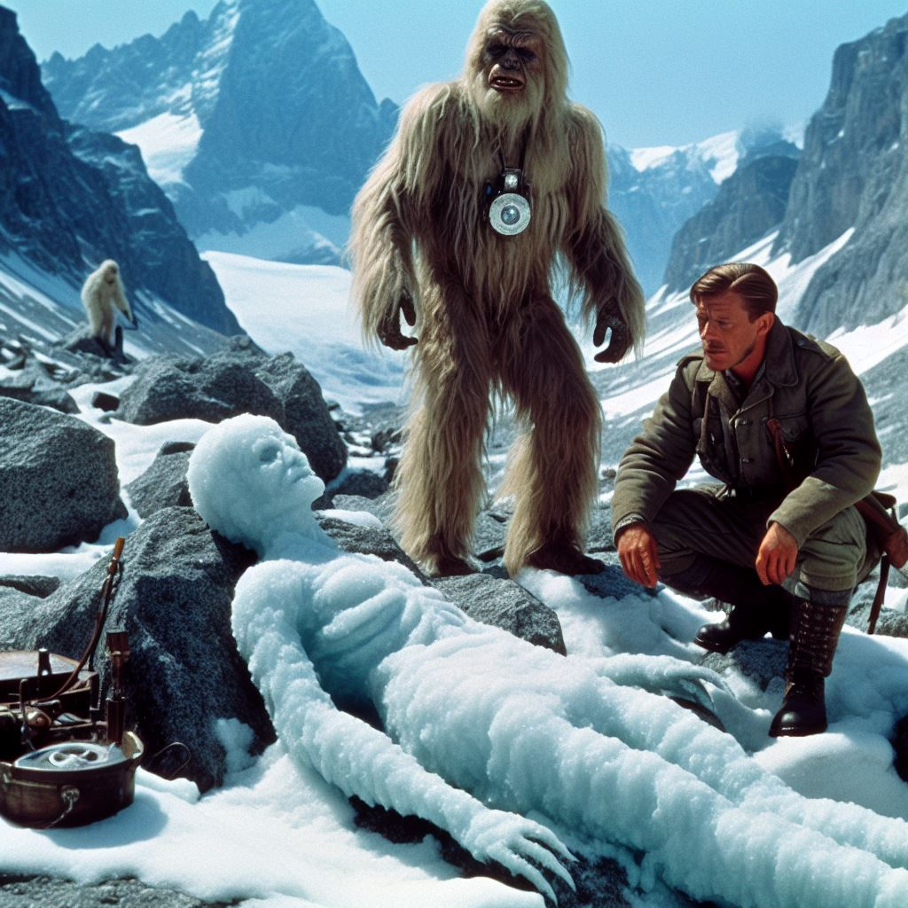

Hunt for the Ice mummy
It is the year 2024 in an alternative universe. You are a student of archaeogenetics at Tübingen university. One cold February afternoon you receive a cryptic email from your professor. You have not seen him for months, when he had left for an expedition in the Tyrolean Alps.
My dear student,
we made an incredible discovery at 46.77° N, 10.83° E! You have to look at this data immediately. I will contact you, when I know more.
Best, CP
Attached you find multiple files. First this incredible photograph1:

But then also genotype data2 files in EIGENSTRAT format:
ice.ind
ice M iceGice.snp
rs3094315 1 2.013e-2 752566 G A
rs12124819 1 2.0242e-2 776546 G A
rs28765502 1 2.2137e-2 832918 C T
rs7419119 1 2.2518e-2 842013 G T
rs950122 1 2.272e-2 846864 C G
...ice.geno
0
0
2
2
0
...They seem to feature the SNPs for a single individual. With few missing values, certainly enough to work with.
You are justifiably concerned about the ethical implications of working with a sample you know so little about, but you put these concerns aside for the moment. You want to get to the bottom of this mystery first.
References
Footnotes
The “photograph” is AI-generated with the following prompt: “A film still of a famous German mountain climber and the Yeti discovering an Ice mummy in the Tyrolean Alps”. Made with Microsoft Bing Image Creator.↩︎
The genotype data was taken from Keller et al. (2012). See iceman_data_prep.sh for a script to prepare the data in the minimal version assumed here.↩︎